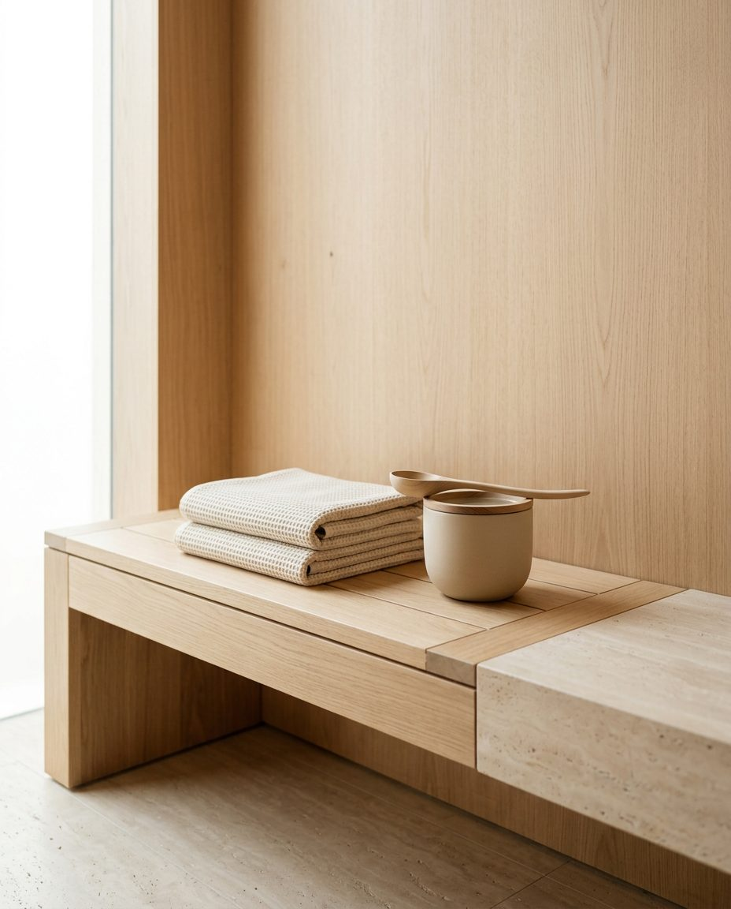
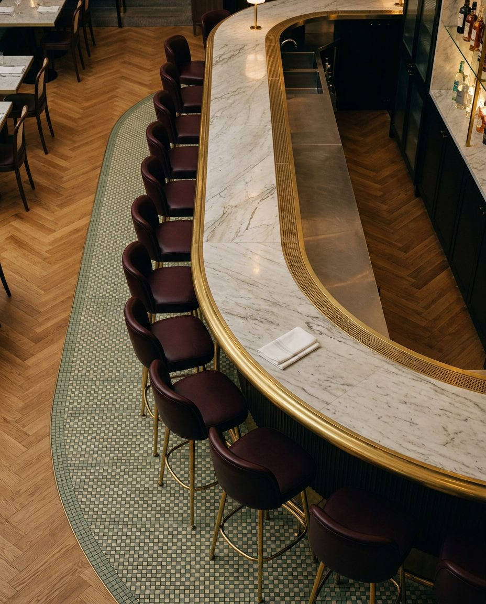
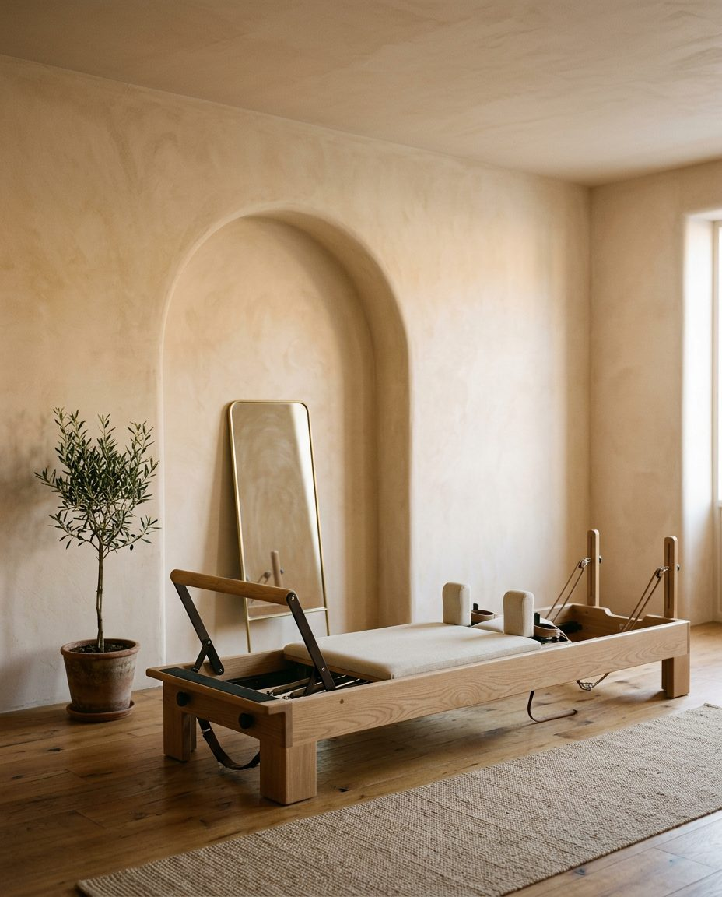
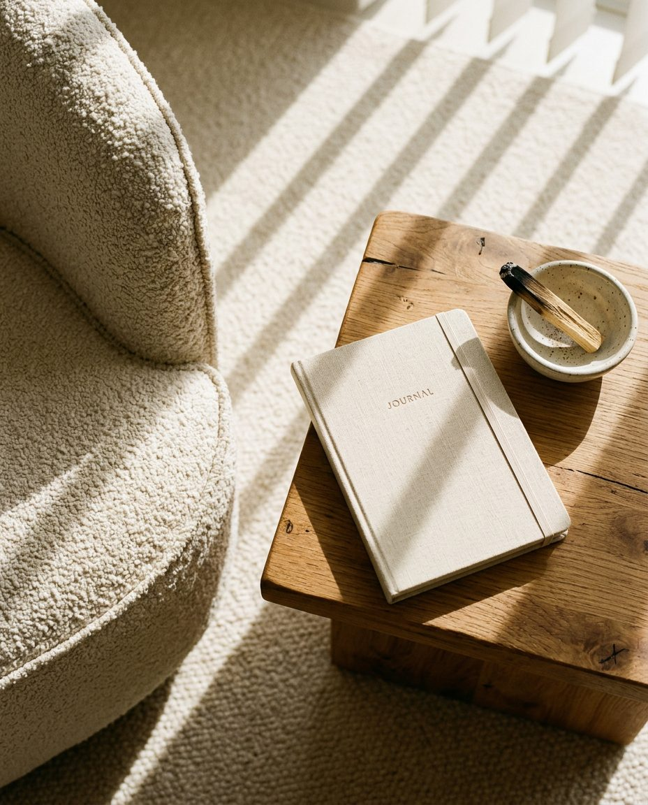
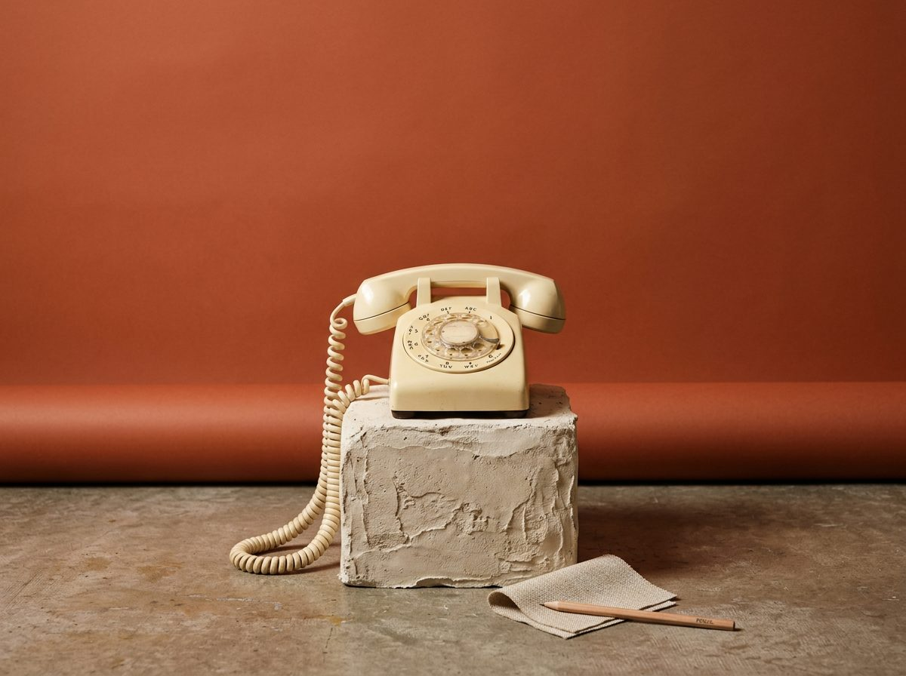

Five-Seventeen is a branding studio for hospitality, wellness, and med spa businesses: the kind of places people return to
because of how they feel once they are through the door. Most of these businesses are already excellent at what they do.
Few have a brand that says so before someone walks in.
We build the strategy, story, and visual identity that make a business this strong impossible to miss.
A complete brand in five to six weeks. Strategy, identity, and guidelines
built to hold up in the room, not just on a screen. You see two directions
and keep the one that fits. $3,500.


One call. A clear list of what is working in your brand and what is not.